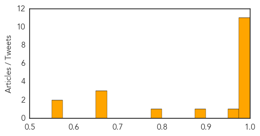

Dengue Fever
30-Day Web Trend
12 alerts, 15 warnings

30-Day Twitter Trend
0 alerts, 0 warnings

Article Locations


Article Confidences
Top Articles:
- 0.997
- Dengue virus ′endemic′ in China, say researchers
- 0.996
- Dengue cases in Delhi breach 10,000 mark, 30 deaths confirmed
- 0.994
- Swineflu case surfaces in Ludhiana, puts authorities into tizzy
- 0.994
- Comprehensive genomic study provides evidence that dengue has become endemic and diverse in China
- 0.993
- Neglected tropical diseases taking hold in U.S.
- 0.990
- Comprehensive genomic study provides evidence that dengue has become endemic and diverse in China
- 0.989
- DOH: Dengue cases rise four times this year - Philippines
- 0.989
- DOH: Dengue cases rise four times this year
- 0.988
- Panic in Kotwa as dengue scare continues unabated
- 0.986
- 3,077 fresh dengue cases in last 1 week; total crosses 10,000 mark
- 0.985
- Panic in Kotwa as dengue scare continues unabated
- 0.960
- Multan expects decline in dengue cases
- 0.895
- Dengue treatment costs a bomb
- 0.796
- Why Your Dog Can Get Vaccinated Against Lyme Disease And You Can’t
- 0.674
- Plan to honeytrap dengue mosquitoes
- 0.666
- 30 diseases that Columbus introduced to the Americas
- 0.659
- Doctors plan global day of climate action « nuclear-news
- 0.572
- City residents vulnerable to threat of dengue
- 0.563
- 30 terrible diseases Christopher Columbus brought to the New World
Top Tweets:
-
No tweets found for Oct 12, 2015
Influenza
30-Day Web Trend
5 alerts, 4 warnings

30-Day Twitter Trend
0 alerts, 0 warnings

Article Locations

Article Confidences

Top Articles:
- 0.997
- Flu vaccines coming this month
- 0.992
- Last Season's Flu Vax: Not Entirely Worthless
- 0.976
- Professor David Salisbury says all children should be vaccinated against flu
- 0.976
- Don't give flu shot a miss this season based on last year's failure, doctors say
- 0.973
- Last Season's Flu Vax: Not Entirely Useless
- 0.966
- Flu shots in higher dose can reduce hospitalization cases among nursing home patients, study finds
- 0.933
- Flu Vaccine Now Available At County Health Departments Statewide
- 0.843
- Today's stories from newspapers in Parry Sound
- 0.826
- Here's something you should read before you get your flu shots
- 0.783
- Higher Flu Shot Dose Decreases Hospitalization Of Elderly
- 0.751
- October 12, 2015 Archives
- 0.751
- October 12, 2015 Archives
- 0.751
- October 12, 2015 Archives
- 0.751
- October 12, 2015 Archives
- 0.688
- High dose influenza shots more effective in older people
- 0.684
- High dose influenza shots more effective in older people
- 0.678
- High dose influenza shots more effective in older people
- 0.623
- High Dose Influenza Shots More Effective In Older People
Top Tweets:
-
No tweets found for Oct 12, 2015